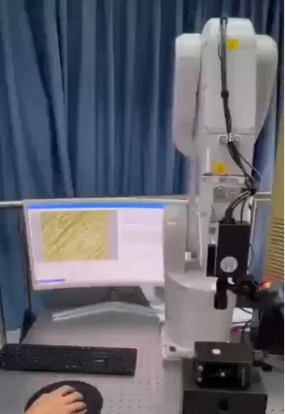
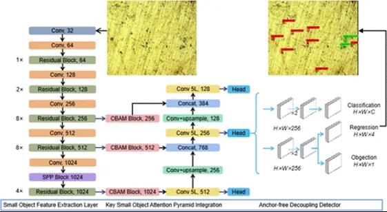
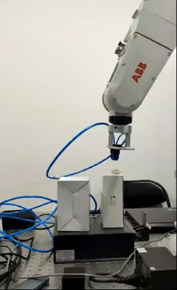

以具体问题为起点，探索机器视觉与智能移动的应用方式。

围绕工业表面质量检测，探索以视觉信息辅助粗糙度分析，减少对单一人工判断方式的依赖。

通过多通道、多尺度的图像特征分析，关注复杂表面中的缺陷识别与定位。

将目标识别与定位信息用于辅助分拣，连接图像感知和设备动作。
围绕轮椅移动场景，将环境感知、导航规划和语音交互组合成辅助出行方案。
从使用环境、功能需求和部署条件开始，梳理适合的产品方向。